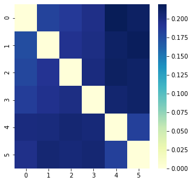
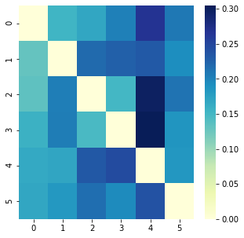
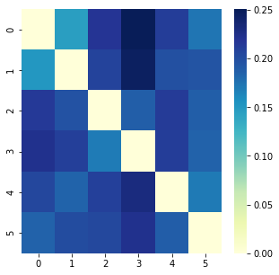

Quantification of the similarity/distance between two given documents/sentences.
Document 1. Machine learning is the study of computer algorithms that improve automatically through experience.Machine learning algorithms build a mathematical model based on sample data, known as training data.The discipline of machine learning employs various approaches to teach computers to accomplish tasks where no fully satisfactory algorithm is available.
Document 2. Machine learning is closely related to computational statistics, which focuses on making predictions using computers.The study of mathematical optimization delivers methods, theory and application domains to the field of machine learning.
Document 3. Machine learning involves computers discovering how they can perform tasks without being explicitly programmed to do so. It involves computers learning from data provided so that they carry out certain tasks.
Document 4. Machine learning approaches are traditionally divided into three broad categories, depending on the nature of the "signal"or "feedback" available to the learning system: Supervised, Unsupervised and Reinforcement
Document 5. Software engineering is the systematic application of engineering approaches to the development of software.Software engineering is a computing discipline.
Document 6. A software engineer creates programs based on logic for the computer to execute. A software engineer has to be more concerned about the correctness of the program in all the cases. Meanwhile, a data scientist is comfortable with uncertainty and variability.
Cosine Similarity and Euclidean Distance.| Cosine Similarity | Euclidean distance |
|---|---|
|  |
| Cosine Similarity | Euclidean distance |
|---|---|
| Cosine Similarity | Euclidean distance |
|---|---|
|  |
| Cosine Similarity | Euclidean distance |
|---|---|
| Cosine Similarity | Euclidean distance |
|---|---|
|  |
This work is some short of survey covering several pre-trained models for the quantification of similarity between documents using Cosine Similarity and Euclidean distance as two metrics.